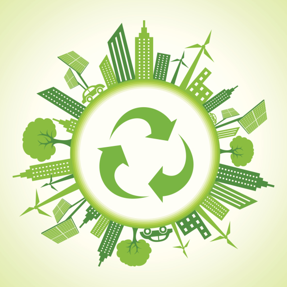

“In the end the term circularity may be just one way to make
us aware that we need a more encompassing, integrated and
restorative sustainability path that includes people as much
as technology and nature .”
- Michiel Schwarz

A circular economy is presented as a system of resource utilisation
where reduction, reuse and recycling of elements prevail. It presents
the prospect of a systematic shift from the linear economic model
towards a closed loop model which limits the disposal of usable
materials and focuses on the utilisation of renewable resources to
achieve economic development. A circular economy lays emphasis
on the need for sustainable development to ensure economic and
environmental stability.
Under the linear model, we procure raw materials for production of
goods which after usage will turn into waste. This “waste” has not
yet been fully utilised and can easily be used in the production of
secondary products which will limit the need to extract raw materials
and maximises the efficiency of each unit of input. The circular model
is often termed as the ‘make/remake’ or ‘use/reuse’ model.
Another important principle of circular economy is to extend the
useful life of products and materials by creating loops of the
materials used in the manufacturing process.
The systemic shift shall also enable the natural systems to
regenerate resources to enhance natural capital. This will result in
increased deposits of minerals and non- renewable sources of
energy, preserving it for the future generation and maintaining the
ecological balance.
Easily one of the most striking examples of effective utilisation of a
material is shipment containers. After exhaustive use in shipping
cargo, these steel structures are utilised for their resilience and
strength. Some of the unusual uses of shipping containers include
housing projects, sheds, emergency medical facilities, garages, shops,
portable washrooms among others.
While the attention for the circular economy is increasing, the
extraction and prices of primary raw materials are still increasing.
According to Circle Economy calculations, 9% of all raw materials
were fully recycled by 2019. In 2018, this percentage was slightly
higher at 9.1%.In theory, in the circular economy, 100% of all raw
materials are fully recycled, and no new virgin raw materials are
needed. It will take a very long time for this scenario to be achieved,
because methods will have to be found to fully recycle materials that
are currently used in products. This brings forward an issue that
limits the growth of a circular economy- Are the various economic
entities, be it the governments or the firms, willing to invest its
resources to further the cause of a circular economy. In the current
scenario, most under developed and developing economies do not
have adequate infrastructure to support high volumes of recycling
and waste segregation. In order to break free of the linear model,
large scale investments must be made at a global level and merely
government guidelines and agendas would not suffice to bring our
infrastructure to the required level. Another key aspect which might
go unnoticed is the final consumer’s willingness to shift from using
the new breed or range of products that shall be developed and
produced, as with the advent of circular models, some goods might
be available in limited quantities while most goods would see a
refined and remodelled version of them.
Demand stabilisation and Perpetual Innovation are also a few
hindrances to the establishment of a circular economy. However, in
most economies the stability of demand is uncertain due to
increasing population and expenditure. This places the economy in a
situation where new resources must be extracted to meet the
increase in demands between two points of time. As resources must
be recycled in entirety, there must be a certainity that each product
can be recycled or remodeled into new commodities. This puts a key
emphasis that innovators must always have solutions pertaining to
the use of discarded items.
The United Nation Environmental Plan predicted a $2 trillion yearly
benefit for the global economy arising out of a more effective
resource utilisation model. Although there shall be a decrease in jobs
in the resource extraction and raw material processing industries,
these shall be offset by the increase in the demand for specialised
workforce to develop, produce and maintain the circular channels for
the flow of goods.
The Ellen MacArthur Foundation has prepared a detailed insight
into the applications of circular economy in India. Some of the key
highlights have been listed below:
● A circular economy development path in India could create
annual value of 14 lakh crore (US$ 218 billion) in 2030 and 40
lakh crore (US$ 624 billion) in 2050 compared with the current
development scenario.
● By adopting circular economy approaches, businesses could
achieve material cost savings and increase their profits
● A circular economy development path could significantly
mitigate negative environmental externalities
● A circular economy could deliver benefits for the Indian
population, such as cheaper products and services and reduced
congestion and pollution
● Leveraging digital technology to enable the circular economy
could reinforce India’s position as a hub for technology and
innovation.
● By actively leveraging and reinforcing circular economy
opportunities now, India could move directly to a more
effective system and avoid getting locked into linear models
and infrastructure
● High-growth markets like India can achieve competitive
advantage over mature economies by moving to a circular
economy
Thus , it is evident that there numerous challenges that we shall face
in exploring the development of the Circular Economy,
however we need to evaluate the costs with respect to the
benefits that shall arise from this systematic shift. This gradual
change requires the onset of a new ideology where the global
economy moves forward together by placing emphasis on
viewing sustainability as the foundation for long term
economic and human growth. The question I propose is : Are
we ready to usher under this paradigm shift; As consumers
who prefer recycled and reusable commodities; As producers
who focus on effective resource utilisation and environment
friendly methods of production; As investors who are willing to
invest our resources to support those who promote this cause?
And is it time for the world to witness the rise of Green Politics?